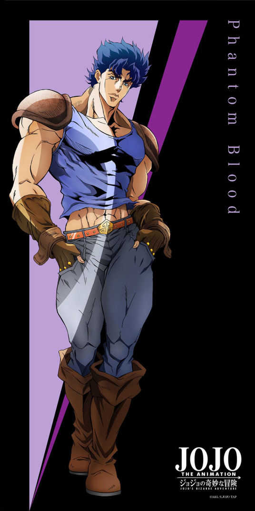

角色形象家族历史悠久的英国贵族乔斯达家的嫡男，外号为乔乔(JOJO)。拥有作为贵族的骄傲,率直而绅士的性格。 与迪奥相遇的时候抱有不擅长应对对方的意识,之后把他作为自己的竞争对手共同成长. 初代JOJO,英国人,男,父亲为乔治·乔斯达爵士,母亲为玛丽·乔斯达. 为报父仇追击迪奥·布兰度,得到威廉·A·齐贝林的帮助,并跟其习会了波纹气功。 角色能力伸缩拳：将手臂骨骼分离并以波纹消除痛楚，延长拳击距离的技术。 波纹疾走：用拳头释放波纹攻击敌人。 波纹疾走连打：以附带波纹的拳头向前方高速连打。 仙道波纹疾走：能在墙壁上传导的波纹。 蓝绿色波纹疾走：通过水中传导的波纹，能够进行远距离攻击。 银色波纹疾走：通过金属传导的波纹，可以附在武器上进行攻击。 绯红色波纹疾走：通过摩擦产生高热效果的波纹，可以瞬间烧毁黑骑士布拉霍的头发。 生命磁气波纹疾走：通过波纹疾走将生命磁气的力量增配，暂时性的躲开了塔克斯的攻击。 山吹色波纹疾走：通过拳头直接释放，颜色最接近太阳的金色波纹，攻击力也是波纹疾走系列中最强的（同时也叫金黄色波纹疾走）。 大乔战斗视频欣赏
|
 |